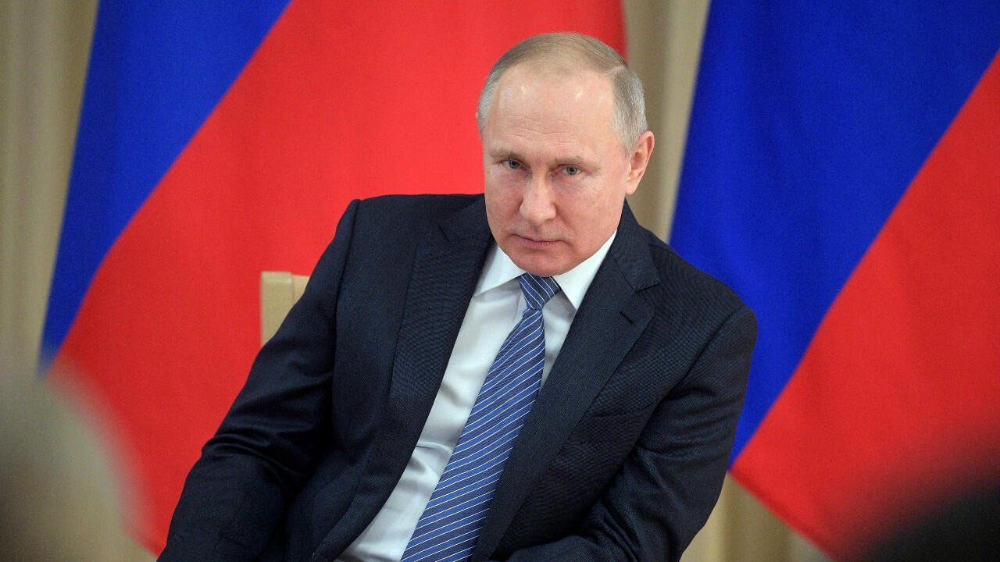

Imagen: Alexey DRUZHININ/SPUTNIK/AFP
Zelensky acababa de declarar que esperaba que se produjera un cese al fuego “antes del invierno”. Esto, tras una reunión que sostuvo con Trump en el marco de su visita a Naciones Unidas. Trump también expresaba optimismo al respecto. Pero un día después, el tono de Zelensky había cambiado. En su discurso ante la Asamblea General, declaraba que la “ridícula e interminable guerra” de Rusia contra su país podría extenderse pronto a otras partes de Europa, y pedía aumentar la presión sobre Moscú. Tan solo unas horas después, múltiples reportes inundaban los medios internacionales. Era ahora la inteligencia danesa la que advertía que, dentro de unos meses, Rusia podría desplazar un pequeño número de tropas, posiblemente sin insignias, hacia un país vecino, o utilizar armas de largo alcance contra infraestructura de países que apoyan a Ucrania. Mientras tanto, Euronews reportaba que EE. UU. habría advertido a España, Francia e Italia de un posible ataque de Moscú. Esa inteligencia es la que habría detonado la visita del jefe de la CIA a Rusia el mes pasado. ¿Cómo interpretar todo lo que está sucediendo en torno a ese conflicto que está por cumplir cinco años? Unas notas al respecto:
1. Parto de que, por un lado, está lo que sucede en el terreno material de las hostilidades y, por el otro, las narrativas que se cuentan acerca de esos hechos, las percepciones que esas narrativas producen y los efectos políticos que resultan de todo lo anterior. Así, entre vaivenes pendulares, hemos pasado de narrativas que hablan de la inminente derrota de Ucrania, a otras que cuentan todo acerca del fracaso ruso, para entonces regresar a otras que narran la incapacidad de Ucrania para resistir y, por tanto, su necesidad de ya negociar el final de la guerra, incluso asumiendo las pérdidas que ello conlleve, hasta nuevas narrativas que cuentan cómo Kiev ha sido capaz de recuperarse e infligir daños impensables a Rusia.
2. Dentro de esos vaivenes narrativos, hace pocos meses se hablaba acerca de los éxitos ucranianos para golpear especialmente la infraestructura energética rusa, y de cómo Kiev, gracias a sus avances en drones, estaba consiguiendo trasladar el conflicto hacia Rusia. Todo ello sumado al estancamiento del frente y la imposibilidad del ejército ruso de lograr avances mayores. Putin, en este relato, estaba viendo mermado el apoyo de su sociedad a la guerra y a su persona.
3. Lo que pasa es que esta no es la primera vez que sucede algo similar. Y lo que hemos observado es que, cada vez que se empieza a percibir que la posición ucraniana se solidifica y que es ahora Putin quien está más urgido de negociar, el presidente ruso opta por escalar, no por ceder. Esas escaladas han adoptado distintas formas: movilizaciones masivas, anexiones de territorios, incremento en el uso de amenazas nucleares y, por supuesto, un aumento en el monto, profundidad y letalidad de los ataques contra la infraestructura civil y ciudades ucranianas.
4. Pero al final del camino, los objetivos de Putin tienen que ver con Ucrania, pero no se limitan solo a Ucrania. Sus metas estratégicas no solo incluyen obtener y conservar parte del territorio de ese país, sino producir un círculo de seguridad que sea impenetrable para la OTAN, y demostrar a esa alianza su absoluta determinación a combatir, si es que ese círculo no es respetado. Por ello, Putin no puede permitirse el lujo de ser percibido como débil o derrotado. “A una potencia nuclear no se le puede ganar”, ha declarado en incontables ocasiones. Internamente, Putin tampoco puede permitirse proyectar debilidad. Todo ello, sumado a que él percibe que el tiempo juega a favor de Rusia, produce vastos incentivos para escalar.
5. Así, en este mismo 2026, cuando en todo el planeta fluían las historias acerca de los daños a la infraestructura energética rusa, las afectaciones a refinerías clave, estaciones de bombeo, terminales de exportación y centros de almacenamiento, impactando enormemente en la capacidad de refinación y las exportaciones rusas de gasolina y queroseno para proteger el mercado interno; cuando Moscú y San Petersburgo eran víctimas de ataques con cientos de drones, y cuando se afirmaba que los daños a la aprobación interna de Putin parecían irreversibles, el presidente ruso una vez más eleva las apuestas.
6. Como contexto, hay que considerar que Ucrania sufre múltiples vulnerabilidades. Algunas, como sus muchas dificultades financieras, han podido ser relativamente sorteadas con el apoyo de sus aliados. Otras, como la escasez de tropas, han tenido que ir siendo resueltas sobre la marcha, haciendo el uso más eficiente de las tácticas de guerra y del desarrollo de tecnología militar que le ha sido posible.
7. Pero hay un factor que quita el sueño a los ucranianos: la escasez de defensas para detener los misiles de ataque y ahora, como desarrollo más reciente, una nueva generación de drones de propulsión a reacción, mucho más rápidos que los modelos utilizados anteriormente. Uno de los factores que más ha afectado esta escasez de misiles defensivos como los Patriot tiene que ver con la guerra en Irán y el propio desabasto de Estados Unidos en este rubro.
8. Rusia conoce muy bien esta vulnerabilidad y la ha estado explotando con ataques contra ciudades e infraestructura ucraniana que están produciendo estragos.
9. Pero además de eso, Rusia está adoptando otra estrategia. Algo que no es nuevo, pero que está creciendo a velocidades muy notables: la puesta en marcha de una campaña de guerra híbrida o de bajo perfil contra países de la OTAN. Hay una cantidad de tácticas que se emplean para estos efectos. Pero lo más importante consiste en que se trata de ataques (sabotajes, incursiones con drones, ciberataques, entre muchos otros) cuya autoría puede ser plausiblemente negada por Moscú, que siembran dudas acerca de su intencionalidad o de los actores que están detrás y que, por tanto, dejan abierta la puerta a un sinnúmero de posibles respuestas por parte de los países atacados. Sin embargo, la ambigüedad es tal que, ninguno de los casos esa respuesta ha consistido en devolver un golpe militar directo y abierto contra Rusia.
10. El objetivo ruso es, por un lado, poner a prueba la unidad y la resistencia de la OTAN. Por el otro, elevar el costo para esos países por su sostenido apoyo a Ucrania. Y, en última instancia, desgastar y fragmentar la alianza y/o a las sociedades que la componen. No podemos olvidar que hay amplios sectores en Occidente que se oponen a seguir destinando recursos y corriendo riesgos para defender a Ucrania en una guerra que no consideran propia. Como ejemplo, solo considerar que 60% de quienes votaron por Trump en 2024 se oponían a seguir armando a Kiev para sostener su guerra. Esto mismo está sucediendo, en distintos grados, en diversos países europeos.
11. Como resultado de todo lo anterior, lejos de que Putin esté dispuesto en este momento a flexibilizar sus demandas respecto al territorio ucraniano o a las garantías de seguridad que demanda Kiev—incluida la posibilidad de presencia de tropas de países miembros de la OTAN en Ucrania—lo más probable por ahora es que el presidente ruso esté pensando no solo en sostener su postura, sino en incrementar sus demandas a cambio de un posible cese al fuego. Esto, a pesar de los altísimos costos que Rusia está teniendo que pagar e incluso pensando en que esos costos solo se incrementarán mientras más tiempo transcurra.
12. Todavía hay otras posibilidades. No podemos descartar que, gracias a la presión de Trump, Putin termine cediendo en algunas de sus demandas y acceda a un cese al fuego, al menos parcial, o incluso a uno limitado a la suspensión de ataques contra infraestructura energética, si obtiene buenos réditos, como un considerable alivio de sanciones. También podría suceder que Trump, habiendo comprendido la determinación rusa para seguir escalando, opte por presionar a Zelensky en aras de efectuar concesiones a favor de Moscú. Habrá que ver, en ese caso, en qué medida Kiev está dispuesta a ceder. Hasta ahora, Zelensky ha pintado líneas rojas muy claras y ha sido imposible acercar las posturas de las partes para siquiera conseguir ese cese al fuego parcial que Trump buscaba.
Por todo lo anterior, el escenario que describen tanto Zelensky como las agencias de inteligencia occidentales apunta hacia mayores escaladas que no solo incluyan el territorio ucraniano, sino, de manera creciente, ataques de “zona gris” contra países europeos.
CIPMEX · Centro de Investigación para la Paz México, A.C. · Paz que se piensa, paz que se construye